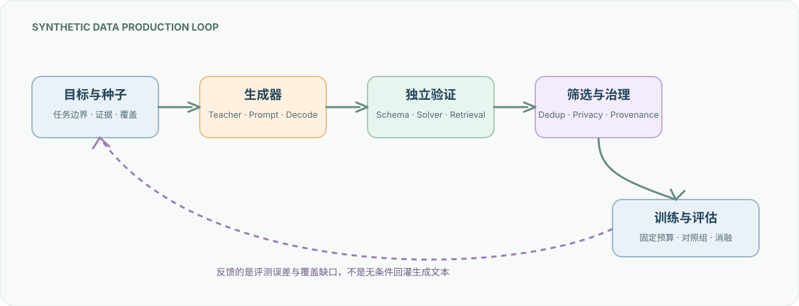
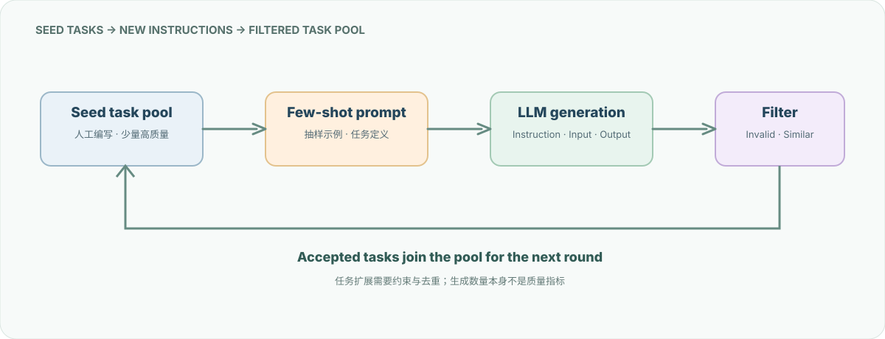
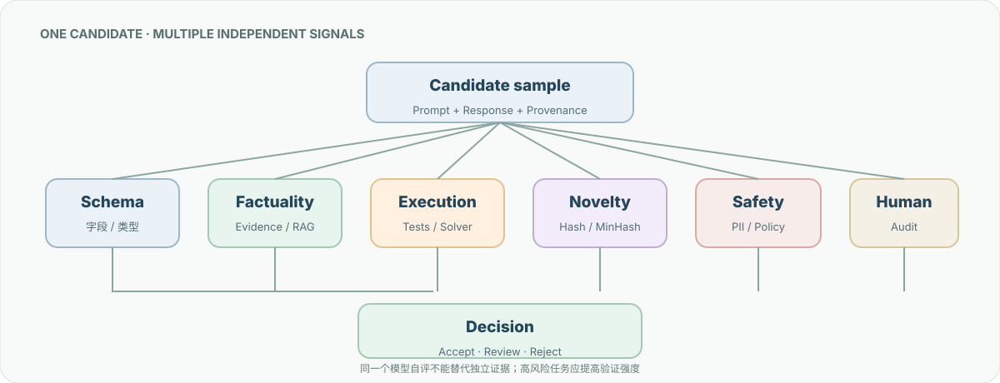

MODULE 21 / LLM DATA ENGINEERING
合成数据生成
从 Self-Instruct 与 Evol-Instruct 到独立验证、来源追踪和模型坍缩风险，构建可审计的合成数据生产线。
当高质量真实样本稀缺、标注昂贵或长尾任务覆盖不足时，能否让模型生成候选训练样本？可以，但“生成出来”不等于“真实、正确、独立、值得训练”。本章把合成数据视为一条需要来源追踪、验证、去重、风险审查和下游实验的生产线，而不是一个 prompt。
合成数据不是一种数据格式，而是一种来源属性

真实数据与合成数据的区别首先在 provenance（来源），不是文本长相。模型生成的数学题可以有标准答案，也可能有隐藏前提错误；人工撰写的网页也可能低质。生产系统必须记录来源类型、教师模型、模型 revision、prompt 版本、采样参数、种子样本、验证器版本和最终审核状态。
| 用途 | 典型样本 | 主要验证 |
|---|---|---|
| 指令跟随 | instruction / input / response | 指令有效性、回答相关性、重复度 |
| 推理与数学 | 题目、解答步骤、最终答案 | 符号检查、独立求解器、数值回代 |
| 代码 | 需求、实现、测试 | 编译、单元测试、隐藏测试与安全沙箱 |
| 领域知识 | 文档 grounded QA、摘要、术语解释 | 证据 span、检索一致性、专家抽检 |
| 偏好与对比 | 同一 prompt 的候选回答与排序 | 盲评、标注协议、位置偏差审计 |
Self-Instruct：从少量种子扩展任务空间

Self-Instruct（ACL 2023）提出用模型自身生成的指令数据改善指令跟随。其流程可拆成四个动作：
- 种子任务池：准备少量人工编写、任务边界清晰的 instruction 示例。
- 指令扩展：从池中抽取若干示例作为 in-context demonstrations，让模型提出新任务指令。
- 实例生成：对新指令生成 input / output。对于分类任务，论文采用 output-first 思路先枚举可能标签，再条件生成输入，减少标签空间失控。
- 过滤与迭代：检查格式、无效指令、答案质量和与已有任务的相似性；通过样本加入任务池，供后续轮次使用。
论文报告，在其 GPT-3 设置中，Self-Instruct 微调相对原始 GPT-3 在 Super-NaturalInstructions 上取得 33 个百分点的绝对提升，并接近论文比较的 InstructGPT-001。这个结果属于论文的模型、数据和评测协议，不代表所有模型都能获得相同收益。
Evol-Instruct：沿着“深度”和“广度”演化指令
WizardLM / Evol-Instruct（2023）从一组初始指令出发，逐步把问题改写得更复杂。深度演化可以增加推理步骤、约束、条件或多阶段任务；广度演化则扩展到新的主题和任务类型。它适合扩展能力覆盖，但复杂度并不等于质量：如果演化操作只增加冗长约束、模糊措辞或不可验证的要求，数据集会变难读而不是变有价值。
Orca使用更强模型的解释轨迹和复杂指令作为监督信号；Phi-4 技术报告也明确说明其训练过程在多个阶段策略性地使用合成数据。两者说明合成数据可以成为精心设计的训练配方的一部分，不证明“教师输出天然正确”。
真正的瓶颈：如何证明一条样本值得保留？

验证器应尽量与生成器独立。让同一个模型生成答案、再让它自评“答案是否正确”，容易出现共同偏差。可以把验证拆成多条互补证据：
| 验证层 | 方法 | 适合发现 | 盲点 |
|---|---|---|---|
| 结构 | JSON Schema、必填字段、长度和类型 | 格式损坏、字段缺失 | 结构合法不等于内容正确 |
| 事实 | 检索证据、引用 span、知识库校验 | 无来源断言、证据不支持 | 检索库本身可能缺失或过时 |
| 可执行 | 代码编译、测试、数学求解器、约束检查 | 可运行性和可验证答案 | 测试覆盖有限，沙箱需隔离 |
| 分布 | 精确哈希、MinHash、embedding 邻居 | 重复和模板化变体 | 近似相似不等于语义无效 |
| 安全与治理 | PII、危险内容、授权与来源规则 | 隐私、滥用、授权风险 | 自动检测存在漏检和误报 |
| 人工与下游 | 分层抽检、盲评、固定配方消融 | 模型无法可靠判定的边界质量 | 成本较高，需记录抽样设计 |
质量不是一个分数
至少分别报告四个维度：fidelity（与证据或目标任务一致）、diversity（任务与表达覆盖）、utility（是否改善目标能力）、trustworthiness（隐私、偏差、来源与可追溯性）。2026 年的 LLM Data Auditor 综述也强调从质量与可信度两个方向评估合成数据。不要把多维度简单压成一个不可解释的总分。
模型坍缩：风险来自递归替代，不是“出现合成数据”本身
Shumailov 等人在 Nature 2024研究模型生成内容被后续模型反复采集和训练的情形，发现无差别地用模型生成数据替代原始分布，会逐代丢失长尾样本信息。早期表现可能是低频模式先消失，后期则可能出现更明显的分布退化。
但要避免另一个过度简化：模型坍缩并不意味着“所有合成数据都会让模型坍缩”。Is Model Collapse Inevitable? 的实验显示，在其设置中持续保留并累积原始真实数据、而不是每一代都用新合成数据完全替换旧数据，可以避免所研究的坍缩现象。可执行的工程策略是保留真实来源锚点、分层跟踪合成比例、监控长尾覆盖，并对不同混合方案做受控下游评估；不要设定一个脱离任务与配方的通用“安全占比”。
交互实验：候选样本经过多道门后还剩多少？
下面的通过率是教学输入，不是论文统计。每个百分比表示该阶段对上一阶段输出的条件保留率，因此按顺序相乘，而不是假设所有过滤器相互独立。
# scripts/synthetic_data.py
from scripts.synthetic_data import estimate_accepted_records
accepted = estimate_accepted_records(
generated=10_000,
stage_retention_rates=[0.95, 0.75, 0.85, 0.98],
)
print(accepted) # 5926.125 (expected-value estimate, not an observed count)把 provenance 写进每一条样本
{
"id": "synthetic:math:000042",
"instruction": "求解并验证方程 ...",
"response": "先移项 ...",
"provenance": {
"kind": "synthetic",
"seed_document_id": "seed:algebra:0012",
"teacher_model": "provider/model@revision",
"prompt_version": "math-evolution-v3",
"generation_config_hash": "sha256:...",
"verifier": "sympy-check-v2",
"verifier_result": "pass",
"dedup_cluster": "cluster-...",
"review_status": "sampled-approved"
}
}生产系统还应记录生成时间、原始证据、license / usage constraints、数据 split、tokenizer revision、过滤理由和人工审核者/协议。不要把教师模型的私有训练数据、用户对话或无权再分发的材料悄悄包装成“合成数据”。
参考资料
- Wang et al. (2023), Self-Instruct: Aligning Language Models with Self-Generated Instructions，ACL 2023。
- Xu et al. (2023), WizardLM: Empowering Large Language Models to Follow Complex Instructions，Evol-Instruct。
- Mukherjee et al. (2023), Orca: Progressive Learning from Complex Explanation Traces of GPT-4。
- Abdin et al. (2024), Phi-4 Technical Report。
- Long et al. (2024), On LLMs-Driven Synthetic Data Generation, Curation, and Evaluation: A Survey。
- Shumailov et al. (2024), AI models collapse when trained on recursively generated data，Nature。
- Gerstgrasser et al. (2024), Is Model Collapse Inevitable?。
- Zhang et al. (2026), The LLM Data Auditor。